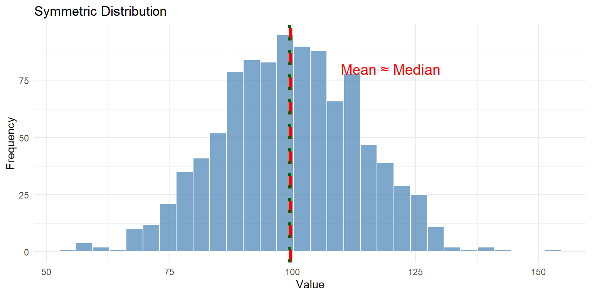
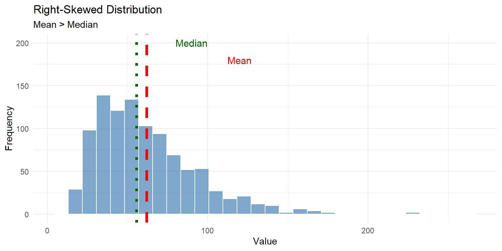
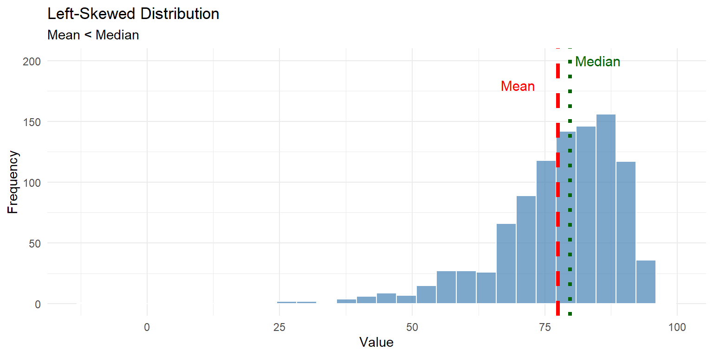
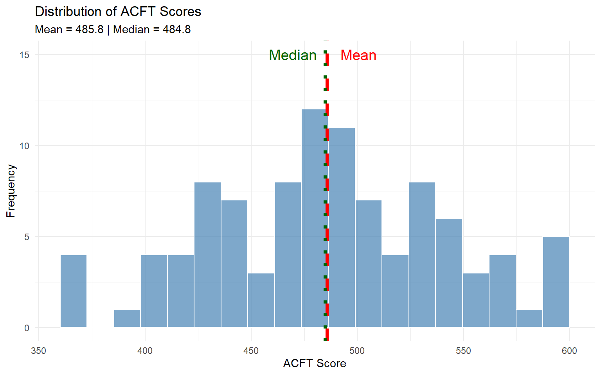

Code
# APFT scores
apft_scores <- c(285, 270, 295, 260, 290)
# Calculate mean
mean_score <- mean(apft_scores)
mean_score[1] 280MA206X: Probability and Statistics
January 8, 2026
By the end of this lesson, you will be able to:
Reading: Devore 1.3
After collecting data, our first task is to summarize it. With potentially hundreds or thousands of observations, we need ways to describe the “center” or “typical value” of our data.
Measures of location (also called measures of central tendency) answer the question: “What is a representative or typical value in this dataset?”
We’ll explore three primary measures:
The sample mean \(\bar{x}\) (pronounced “x-bar”) is the arithmetic average of all observations:
\[\bar{x} = \frac{1}{n}\sum_{i=1}^n x_i = \frac{x_1 + x_2 + \cdots + x_n}{n}\]
where \(n\) is the sample size.
Five soldiers complete the APFT with the following scores:
\[285, 270, 295, 260, 290\]
Calculate the mean score:
\[\bar{x} = \frac{285 + 270 + 295 + 260 + 290}{5} = \frac{1400}{5} = 280\]
Interpretation: The average APFT score is 280 points.
Uses all data: Every observation contributes to the mean
Sensitive to outliers: Extreme values can heavily influence the mean
Balance point: The mean is the value where positive and negative deviations balance out: \[\sum_{i=1}^n (x_i - \bar{x}) = 0\]
Consider two datasets of ruck march times (in minutes):
Dataset A (no outliers):
Dataset B (with outlier):
The single outlier (150) increased the mean from 100 to 109 minutes!
The median is the middle value when observations are arranged in order.
Calculation:
Position: The median is at position \(\frac{n+1}{2}\) (may be between two values)
Ruck march times (minutes) for 5 soldiers:
\[105, 95, 102, 98, 100\]
Step 1: Sort the data: \[95, 98, 100, 102, 105\]
Step 2: Find middle value (position 3): \[\text{Median} = 100\]
Ruck march times (minutes) for 6 soldiers:
\[95, 98, 100, 102, 105, 110\]
Step 1: Data already sorted
Step 2: Average the two middle values (positions 3 and 4): \[\text{Median} = \frac{100 + 102}{2} = 101\]
Revisiting our outlier example:
Mean: 100 Median: 100 Mean: 109 Median: 100 The median (100) didn’t change! This is why median is called a resistant measure.
The mode is the most frequently occurring value in a dataset.
Note: A dataset can have:
Dataset 1: Number of pull-ups in a platoon
pullups
12 15 18 20 22
1 5 2 1 1 Mode = 15 (appears 5 times)
Dataset 2: ACFT scores (rounded to nearest 10)
acft_rounded
450 460 470 480 490 500
1 1 2 1 2 1 Bimodal: Modes are 470 and 490 (each appears twice)
Categorical data: Mode is the only measure of center that makes sense
Example: Most common branch, most popular meal choice
Discrete data with repeats: When values naturally cluster
Example: Most common number of vehicles per household
Identifying peaks: In larger datasets, modes reveal common values
| Measure | Definition | Uses All Data? | Resistant to Outliers? | Works for Categorical? | Best Used When |
|---|---|---|---|---|---|
| Mean | Arithmetic average | Yes | No | No | Symmetric distribution, no outliers |
| Median | Middle value when sorted | No | Yes | No | Skewed distribution or outliers present |
| Mode | Most frequent value | No | Yes | Yes | Finding most common category |
Sometimes we want to know more than just the center. Percentiles describe the relative standing of values in a distribution.
The \(p\)th percentile is the value such that \(p\) percent of the observations fall at or below it.
Notation: \(P_p\) denotes the \(p\)th percentile
If your ACFT score is at the 85th percentile:
Quartiles divide the data into four equal parts:
25% 50% 75%
447.3926 483.9923 522.3987 Interpretation:
The relationship between mean and median reveals information about the distribution’s shape:

Symmetric: Mean ≈ Median

Right-skewed: Mean > Median (pulled toward the tail)

Left-skewed: Mean < Median (pulled toward the tail)
Use the MEAN when:
Use the MEDIAN when:
Use the MODE when:
Let’s analyze a simulated dataset of ACFT scores:
# Simulate ACFT scores for 100 soldiers
set.seed(206)
acft_data <- tibble(
soldier_id = 1:100,
acft_score = pmax(360, pmin(600, rnorm(100, mean = 480, sd = 60)))
)
# Calculate all measures of location
summary_stats <- acft_data %>%
summarize(
n = n(),
Mean = round(mean(acft_score), 1),
Median = round(median(acft_score), 1),
Q1 = round(quantile(acft_score, 0.25), 1),
Q3 = round(quantile(acft_score, 0.75), 1),
Min = min(acft_score),
Max = max(acft_score)
)
summary_stats %>%
kable() %>%
kable_styling(bootstrap_options = c("striped", "hover"))| n | Mean | Median | Q1 | Q3 | Min | Max |
|---|---|---|---|---|---|---|
| 100 | 485.8 | 484.8 | 440.9 | 530.9 | 360 | 600 |
Visualization:
ggplot(acft_data, aes(x = acft_score)) +
geom_histogram(bins = 20, fill = "steelblue", color = "white", alpha = 0.7) +
geom_vline(xintercept = mean(acft_data$acft_score),
color = "red", linewidth = 1.5, linetype = "dashed") +
geom_vline(xintercept = median(acft_data$acft_score),
color = "darkgreen", linewidth = 1.5, linetype = "dotted") +
annotate("text", x = mean(acft_data$acft_score) + 15, y = 15,
label = "Mean", color = "red", size = 5) +
annotate("text", x = median(acft_data$acft_score) - 15, y = 15,
label = "Median", color = "darkgreen", size = 5) +
labs(
title = "Distribution of ACFT Scores",
subtitle = paste("Mean =", round(mean(acft_data$acft_score), 1),
"| Median =", round(median(acft_data$acft_score), 1)),
x = "ACFT Score",
y = "Frequency"
) +
theme_minimal()
Calculate the mean, median, and mode for these datasets:
a) Push-up counts: 45, 50, 55, 50, 60, 50, 65
b) Mile run times (minutes): 6.5, 7.0, 6.8, 7.2, 6.5, 8.5, 6.9
Ten soldiers complete a 12-mile ruck march with the following times (in minutes):
\[140, 145, 150, 155, 160, 165, 170, 175, 180, 220\]
The following are final exam scores for a class:
\[65, 72, 78, 80, 82, 85, 88, 90, 92, 95, 98\]
For each scenario, determine whether mean or median would be more appropriate:
Key Takeaways:
Mean \((\bar{x})\): Arithmetic average, uses all data, sensitive to outliers
Median: Middle value, resistant to outliers, better for skewed distributions
Mode: Most frequent value, useful for categorical data
Percentiles: Describe relative standing
Distribution shape affects mean-median relationship:
Next: In Lesson 4, we’ll learn about measures of variability to describe the spread of data.
---
title: "Lesson 3: Measures of Location"
subtitle: "MA206X: Probability and Statistics"
date: today
---
```{r setup, include=FALSE}
library(tidyverse)
library(kableExtra)
set.seed(206)
```
::: {.learning-objectives}
### Learning Objectives
By the end of this lesson, you will be able to:
1. Calculate and interpret mean, median, and mode
2. Determine percentiles and quartiles
3. Compare measures of center for different distributions
**Reading:** Devore 1.3
:::
## Introduction
After collecting data, our first task is to **summarize** it. With potentially hundreds or thousands of observations, we need ways to describe the "center" or "typical value" of our data.
**Measures of location** (also called **measures of central tendency**) answer the question: *"What is a representative or typical value in this dataset?"*
We'll explore three primary measures:
- **Mean** (average)
- **Median** (middle value)
- **Mode** (most frequent value)
## The Sample Mean
::: {.callout-note}
## Definition: Sample Mean
The **sample mean** $\bar{x}$ (pronounced "x-bar") is the arithmetic average of all observations:
$$\bar{x} = \frac{1}{n}\sum_{i=1}^n x_i = \frac{x_1 + x_2 + \cdots + x_n}{n}$$
where $n$ is the sample size.
:::
### Calculating the Mean
::: {.example}
### Example 3.1: Mean APFT Score
Five soldiers complete the APFT with the following scores:
$$285, 270, 295, 260, 290$$
Calculate the mean score:
$$\bar{x} = \frac{285 + 270 + 295 + 260 + 290}{5} = \frac{1400}{5} = 280$$
**Interpretation**: The average APFT score is 280 points.
:::
### Computing the Mean in R
```{r}
# APFT scores
apft_scores <- c(285, 270, 295, 260, 290)
# Calculate mean
mean_score <- mean(apft_scores)
mean_score
```
### Properties of the Mean
1. **Uses all data**: Every observation contributes to the mean
2. **Sensitive to outliers**: Extreme values can heavily influence the mean
3. **Balance point**: The mean is the value where positive and negative deviations balance out:
$$\sum_{i=1}^n (x_i - \bar{x}) = 0$$
::: {.example}
### Example 3.2: Effect of Outliers on Mean
Consider two datasets of ruck march times (in minutes):
**Dataset A** (no outliers):
```{r}
ruck_A <- c(95, 98, 100, 102, 105)
mean(ruck_A)
```
**Dataset B** (with outlier):
```{r}
ruck_B <- c(95, 98, 100, 102, 150) # One soldier took much longer
mean(ruck_B)
```
The single outlier (150) increased the mean from 100 to 109 minutes!
:::
## The Median
::: {.callout-note}
## Definition: Median
The **median** is the middle value when observations are arranged in order.
**Calculation**:
1. Sort data from smallest to largest
2. If $n$ is odd: median = middle value
3. If $n$ is even: median = average of two middle values
**Position**: The median is at position $\frac{n+1}{2}$ (may be between two values)
:::
### Calculating the Median
::: {.example}
### Example 3.3: Median with Odd Sample Size
Ruck march times (minutes) for 5 soldiers:
$$105, 95, 102, 98, 100$$
**Step 1**: Sort the data:
$$95, 98, 100, 102, 105$$
**Step 2**: Find middle value (position 3):
$$\text{Median} = 100$$
```{r}
ruck_odd <- c(105, 95, 102, 98, 100)
median(ruck_odd)
```
:::
::: {.example}
### Example 3.4: Median with Even Sample Size
Ruck march times (minutes) for 6 soldiers:
$$95, 98, 100, 102, 105, 110$$
**Step 1**: Data already sorted
**Step 2**: Average the two middle values (positions 3 and 4):
$$\text{Median} = \frac{100 + 102}{2} = 101$$
```{r}
ruck_even <- c(95, 98, 100, 102, 105, 110)
median(ruck_even)
```
:::
### The Median is Resistant to Outliers
Revisiting our outlier example:
```{r}
# Dataset A
ruck_A <- c(95, 98, 100, 102, 105)
cat("Mean:", mean(ruck_A), " Median:", median(ruck_A), "\n")
# Dataset B (with outlier)
ruck_B <- c(95, 98, 100, 102, 150)
cat("Mean:", mean(ruck_B), " Median:", median(ruck_B), "\n")
```
The median (100) didn't change! This is why median is called a **resistant** measure.
## The Mode
::: {.callout-note}
## Definition: Mode
The **mode** is the most frequently occurring value in a dataset.
**Note**: A dataset can have:
- No mode (all values occur once)
- One mode (**unimodal**)
- Multiple modes (**bimodal**, **multimodal**)
:::
::: {.example}
### Example 3.5: Finding the Mode
**Dataset 1**: Number of pull-ups in a platoon
```{r}
pullups <- c(12, 15, 15, 18, 15, 20, 18, 15, 22, 15)
# Find mode (manually - R doesn't have a built-in mode function)
table(pullups)
```
**Mode = 15** (appears 5 times)
**Dataset 2**: ACFT scores (rounded to nearest 10)
```{r}
acft_rounded <- c(450, 460, 470, 470, 480, 490, 490, 500)
table(acft_rounded)
```
**Bimodal**: Modes are 470 and 490 (each appears twice)
:::
### When is Mode Useful?
- **Categorical data**: Mode is the only measure of center that makes sense
*Example*: Most common branch, most popular meal choice
- **Discrete data with repeats**: When values naturally cluster
*Example*: Most common number of vehicles per household
- **Identifying peaks**: In larger datasets, modes reveal common values
## Comparing Mean, Median, and Mode
```{r, echo=FALSE}
comparison <- tibble(
Measure = c("Mean", "Median", "Mode"),
Definition = c(
"Arithmetic average",
"Middle value when sorted",
"Most frequent value"
),
`Uses All Data?` = c("Yes", "No", "No"),
`Resistant to Outliers?` = c("No", "Yes", "Yes"),
`Works for Categorical?` = c("No", "No", "Yes"),
`Best Used When` = c(
"Symmetric distribution, no outliers",
"Skewed distribution or outliers present",
"Finding most common category"
)
)
comparison %>%
kable() %>%
kable_styling(bootstrap_options = c("striped", "hover")) %>%
column_spec(1, bold = TRUE)
```
## Percentiles and Quartiles
Sometimes we want to know more than just the center. **Percentiles** describe the relative standing of values in a distribution.
### Percentiles
::: {.callout-note}
## Definition: Percentile
The **$p$th percentile** is the value such that $p$ percent of the observations fall at or below it.
**Notation**: $P_p$ denotes the $p$th percentile
:::
::: {.example}
### Example 3.6: Interpreting Percentiles
If your ACFT score is at the **85th percentile**:
- 85% of soldiers scored at or below your score
- 15% of soldiers scored above your score
- You performed better than 85% of test-takers
:::
### Special Percentiles: Quartiles
**Quartiles** divide the data into four equal parts:
- **$Q_1$ (First Quartile)** = 25th percentile
- **$Q_2$ (Second Quartile)** = 50th percentile = **Median**
- **$Q_3$ (Third Quartile)** = 75th percentile
```{r}
# Generate sample ACFT scores
acft_scores <- rnorm(100, mean = 480, sd = 50)
# Calculate quartiles
quartiles <- quantile(acft_scores, probs = c(0.25, 0.50, 0.75))
quartiles
```
**Interpretation**:
- 25% of scores are below `r round(quartiles[1], 1)`
- 50% of scores are below `r round(quartiles[2], 1)` (the median)
- 75% of scores are below `r round(quartiles[3], 1)`
### Computing Percentiles in R
```{r}
# 90th percentile of ACFT scores
p90 <- quantile(acft_scores, probs = 0.90)
p90
# Multiple percentiles at once
percentiles <- quantile(acft_scores, probs = c(0.10, 0.25, 0.50, 0.75, 0.90))
percentiles
```
## Distribution Shape and Measures of Center
The relationship between mean and median reveals information about the distribution's shape:
### Symmetric Distributions
```{r, echo=FALSE, fig.height=4}
# Generate symmetric data
symmetric_data <- rnorm(1000, mean = 100, sd = 15)
ggplot(tibble(x = symmetric_data), aes(x = x)) +
geom_histogram(bins = 30, fill = "steelblue", color = "white", alpha = 0.7) +
geom_vline(xintercept = mean(symmetric_data), color = "red", linewidth = 1.5, linetype = "dashed") +
geom_vline(xintercept = median(symmetric_data), color = "darkgreen", linewidth = 1.5, linetype = "dotted") +
annotate("text", x = 120, y = 80, label = "Mean ≈ Median", size = 5, color = "red") +
labs(title = "Symmetric Distribution", x = "Value", y = "Frequency") +
theme_minimal()
```
**Symmetric**: Mean ≈ Median
### Right-Skewed Distributions
```{r, echo=FALSE, fig.height=4}
# Generate right-skewed data
right_skewed <- exp(rnorm(1000, mean = 4, sd = 0.5))
ggplot(tibble(x = right_skewed), aes(x = x)) +
geom_histogram(bins = 30, fill = "steelblue", color = "white", alpha = 0.7) +
geom_vline(xintercept = mean(right_skewed), color = "red", linewidth = 1.5, linetype = "dashed") +
geom_vline(xintercept = median(right_skewed), color = "darkgreen", linewidth = 1.5, linetype = "dotted") +
annotate("text", x = 90, y = 200, label = "Median", size = 4, color = "darkgreen") +
annotate("text", x = 120, y = 180, label = "Mean", size = 4, color = "red") +
labs(title = "Right-Skewed Distribution", subtitle = "Mean > Median", x = "Value", y = "Frequency") +
theme_minimal()
```
**Right-skewed**: Mean > Median (pulled toward the tail)
### Left-Skewed Distributions
```{r, echo=FALSE, fig.height=4}
# Generate left-skewed data
left_skewed <- 100 - exp(rnorm(1000, mean = 3, sd = 0.5))
ggplot(tibble(x = left_skewed), aes(x = x)) +
geom_histogram(bins = 30, fill = "steelblue", color = "white", alpha = 0.7) +
geom_vline(xintercept = mean(left_skewed), color = "red", linewidth = 1.5, linetype = "dashed") +
geom_vline(xintercept = median(left_skewed), color = "darkgreen", linewidth = 1.5, linetype = "dotted") +
annotate("text", x = 70, y = 180, label = "Mean", size = 4, color = "red") +
annotate("text", x = 85, y = 200, label = "Median", size = 4, color = "darkgreen") +
labs(title = "Left-Skewed Distribution", subtitle = "Mean < Median", x = "Value", y = "Frequency") +
theme_minimal()
```
**Left-skewed**: Mean < Median (pulled toward the tail)
## Choosing the Right Measure
::: {.callout-tip}
## Which Measure Should I Use?
**Use the MEAN when:**
- Distribution is roughly symmetric
- No extreme outliers
- You need to use all data values
**Use the MEDIAN when:**
- Distribution is skewed
- Outliers are present
- You want a resistant measure
**Use the MODE when:**
- Data is categorical
- You want the most typical category/value
:::
## Real Data Example: Exploring ACFT Scores
Let's analyze a simulated dataset of ACFT scores:
```{r}
# Simulate ACFT scores for 100 soldiers
set.seed(206)
acft_data <- tibble(
soldier_id = 1:100,
acft_score = pmax(360, pmin(600, rnorm(100, mean = 480, sd = 60)))
)
# Calculate all measures of location
summary_stats <- acft_data %>%
summarize(
n = n(),
Mean = round(mean(acft_score), 1),
Median = round(median(acft_score), 1),
Q1 = round(quantile(acft_score, 0.25), 1),
Q3 = round(quantile(acft_score, 0.75), 1),
Min = min(acft_score),
Max = max(acft_score)
)
summary_stats %>%
kable() %>%
kable_styling(bootstrap_options = c("striped", "hover"))
```
**Visualization**:
```{r, fig.height=5}
ggplot(acft_data, aes(x = acft_score)) +
geom_histogram(bins = 20, fill = "steelblue", color = "white", alpha = 0.7) +
geom_vline(xintercept = mean(acft_data$acft_score),
color = "red", linewidth = 1.5, linetype = "dashed") +
geom_vline(xintercept = median(acft_data$acft_score),
color = "darkgreen", linewidth = 1.5, linetype = "dotted") +
annotate("text", x = mean(acft_data$acft_score) + 15, y = 15,
label = "Mean", color = "red", size = 5) +
annotate("text", x = median(acft_data$acft_score) - 15, y = 15,
label = "Median", color = "darkgreen", size = 5) +
labs(
title = "Distribution of ACFT Scores",
subtitle = paste("Mean =", round(mean(acft_data$acft_score), 1),
"| Median =", round(median(acft_data$acft_score), 1)),
x = "ACFT Score",
y = "Frequency"
) +
theme_minimal()
```
## Practice Problems
::: {.practice}
### Practice 3.1
Calculate the mean, median, and mode for these datasets:
**a)** Push-up counts: 45, 50, 55, 50, 60, 50, 65
**b)** Mile run times (minutes): 6.5, 7.0, 6.8, 7.2, 6.5, 8.5, 6.9
:::
::: {.practice}
### Practice 3.2
Ten soldiers complete a 12-mile ruck march with the following times (in minutes):
$$140, 145, 150, 155, 160, 165, 170, 175, 180, 220$$
a) Calculate the mean and median
b) Which measure better represents the "typical" time? Why?
c) Identify the outlier. How does it affect each measure?
:::
::: {.practice}
### Practice 3.3
The following are final exam scores for a class:
$$65, 72, 78, 80, 82, 85, 88, 90, 92, 95, 98$$
a) Find the 25th, 50th, and 75th percentiles
b) What score is at the 90th percentile?
c) If a cadet scored 85, what percentile are they at approximately?
:::
::: {.practice}
### Practice 3.4
For each scenario, determine whether mean or median would be more appropriate:
a) Average salary in the Army (including generals)
b) Typical age of cadets at USMA
c) Average household income in the US
d) Typical number of siblings for cadets
:::
## Summary
**Key Takeaways:**
1. **Mean** $(\bar{x})$: Arithmetic average, uses all data, sensitive to outliers
2. **Median**: Middle value, resistant to outliers, better for skewed distributions
3. **Mode**: Most frequent value, useful for categorical data
4. **Percentiles**: Describe relative standing
- $Q_1$ = 25th percentile
- $Q_2$ = 50th percentile = Median
- $Q_3$ = 75th percentile
5. **Distribution shape** affects mean-median relationship:
- Symmetric: Mean ≈ Median
- Right-skewed: Mean > Median
- Left-skewed: Mean < Median
**Next**: In Lesson 4, we'll learn about **measures of variability** to describe the spread of data.
## Additional Resources
- Devore Section 1.3
- [Khan Academy: Mean, Median, Mode](https://www.khanacademy.org/math/statistics-probability/summarizing-quantitative-data)
- WebAssign homework on measures of location